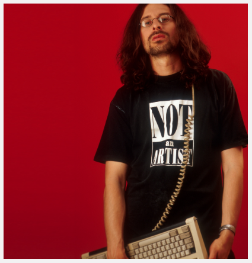

View Work
Read anInterview with Shulgin by Josephine Bosma
Alexei Shulgin 1997
Net ArtRussian artist Alexei Shulgin’s Form Art (1997), which used HTML buttons and boxes as the raw material for monochromatic compositions, is at first glance a purely formal study of certain aspects of HTML. But it was also absurd: Form Art transformed the most bureaucratic, functional, and unloved aspects of the web into aesthetic, ludic elements.
Like much of Shulgin's work, Form Art was also a collaboration. Just as he had borrowed the bureaucratic structure of the HTML form, Shulgin borrowed the bureaucratic structure of the Prix Ars Electronica. He invited users to make and submit their own works to a Form Art Competition, giving rise to a short-lived but well-loved art form.
"I WAS ABSOLUTELY SURE THAT ART AFTER THE INTERNET WOULD NEVER BE THE SAME AND THAT AN ARTIST DOES NOT NEED TO PLAY TRADITIONAL CAREER GAMES, INCLUDING MAINTAINING HIS OR HER OWN STYLE." – ALEXEI SHULGIN
By rendering these standard forms useless, Shulgin draws attention to the materiality and function of the web. “Bringing them in focus was a declaration of the fact that a computer interface is not a 'transparent' invisible layer to be taken for granted," Shulgin notes, "but something that defines the way we are forced to work and even think.”
Form Art was partly created in response to formal experiments with HTML carried out by Shulgin's peers, such as artist duo JODI. JODI and Shulgin are both closely associated with the avant-garde 1990s net.art movement, a loose group of artists who shared an interest in the net's potential to transform artistic production and distribution.
A live outdoor performance by 386DX, the world's first cyberpunk rock band, created by Alexei Shulgin
Though it is formally diverse, most of Shulgin's work in net art involves participation by the public and a wry sense of humor.
Form Art exemplifies this sense of humor and this emphasis on participation and diaglogue. Shulgin launched a Form Art competition and offered a $1000 prize, using his absurdist art form to invite contributions from other users, while poking fun at more serious artistic contests such as Prix Ars Electronica.
“IN GENERAL, NOW I AM HAVING MIXED FEELINGS ABOUT EARLY NET ART BECAUSE I SEE HOW THE STRATEGIES DEVELOPED BY NET ARTISTS ARE NOW USED BY CORPORATIONS AND IN POLITICS. BUT THAT'S THE DESTINY OF AVANTGARDE ART—DEVELOPING COMMUNICATION AND AESTHETIC TOOLS FOR THE FUTURE CAPITALISTS AND POLITICIANS.” – ALEXEI SHULGIN